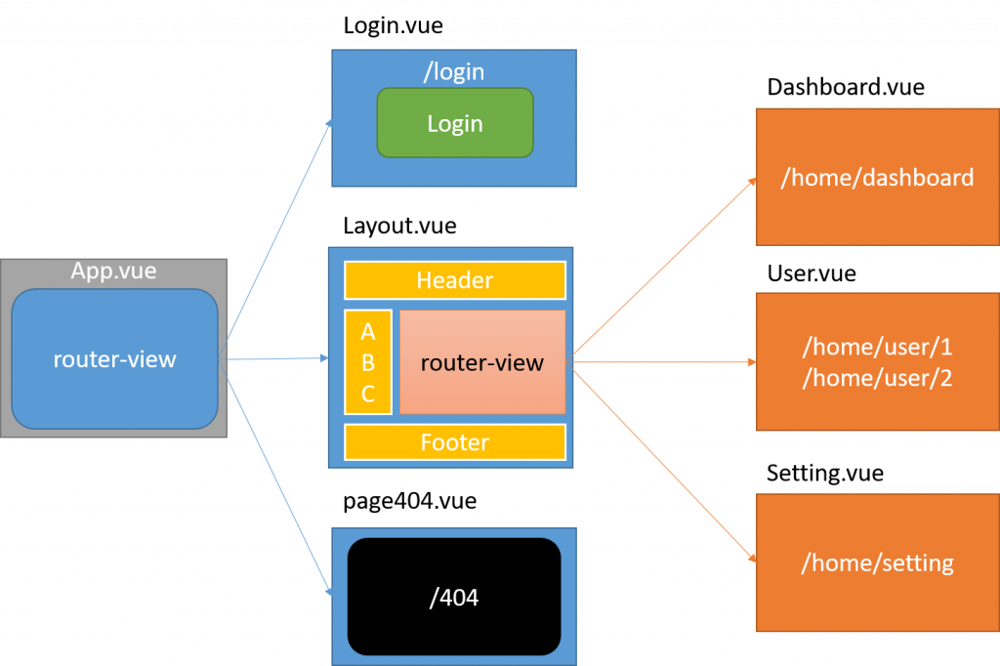

Vue3 ルーティング（Vue Router）
この章では、Vue ルーティングについて紹介します。
Vue ルーティングでは、異なる URL を介して異なるコンテンツにアクセスできます。
Vue を使用すると、複数のビューを持つシングルページ Web アプリケーション（single page web application、SPA）を実現できます。
Vue.js ルーティングには、vue-router ライブラリの読み込みが必要です。
中国語ドキュメントのURL：vue-router ドキュメント。
Vue Router は、URL パスをアプリケーション内のコンポーネントにマッピングします。ユーザーがアプリケーション内を移動すると、URL は更新されますが、ページは再読み込みされないため、スムーズなユーザーエクスペリエンスが提供されます。

上の図は、2 レベルのネストされたルート構造を示しています。：
- 最上位レベル（
App.vue的<router-view>)は、独立レイアウト（例：Login.vue）またはメインレイアウトをレンダリングします。（Layout.vue）。 - メインレイアウト（
Layout.vue)内部には 2 つ目の<router-view>が含まれ、機能ページの子コンポーネント（例：Dashboard.vue、User.vue）のレンダリングに使用され、これによりページヘッダー、サイドバー、ページフッターの永続表示を実現します。 - 一致しないパスは最終的に独立した
page404.vue。
コア構成要素
| 構成要素 | 説明 | オプション API でのアクセス | コンポジション API でのアクセス |
|---|---|---|---|
routerインスタンス |
ルーティングシステム全体のインスタンスで、グローバルナビゲーションやルートの追加などに使用します。 | this.$router |
useRouter() |
routeオブジェクト |
現在アクティブなルートの状態オブジェクトで、現在の URL、パラメータ、クエリなどの情報を含みます。 | this.$route |
useRoute() |
<router-link> |
アプリケーション内でナビゲーションを行うためのコンポーネントで、1 つの<a>タグとしてレンダリングされますが、デフォルトのページリロードを防ぐことができます。 |
- | - |
<router-view> |
ルートにマッチしたコンポーネントはこの位置にレンダリングされます。 | - | - |
インストール
npm インストール
npm install vue-router
npm（中国国内ミラー）
淘宝ミラーの使用を推奨します：
npm install -g cnpm --registry=https://registry.npmmirror.com cnpm install vue-router@4
直接ダウンロード / CDN
https://unpkg.com/vue-router@4
基本的な使い方
1. ルートテーブルの作成
// src/router/index.js
import { createRouter, createWebHistory } from 'vue-router'
import Home from '../views/Home.vue'
import About from '../views/About.vue'
const routes = [
{ path: '/', component: Home },
{ path: '/about', component: About }
]
export default createRouter({
history: createWebHistory(),
routes
})
2. アプリケーションへのマウント
// main.js
import { createApp } from 'vue'
import App from './App.vue'
import router from './router'
createApp(App).use(router).mount('#app')
3. ページの描画先
<router-view></router-view>
4. 遷移
<router-link to="/about">About</router-link>
5. 動的ルート
{ path: '/user/:id', component: User }
`/user/10` にアクセスすると、`$route.params.id === '10'` になります。
6. 遅延読み込み
const About = () => import('../views/About.vue')
7. ナビゲーションガード（認証）
router.beforeEach((to, from, next) => {
next()
})
8. リダイレクト
{ path: '/old', redirect: '/' }
9、404
{ path: '/:pathMatch(.*)*', component: NotFound }
簡単な例
Vue.js + vue-router を使用すると、シングルページアプリケーションを簡単に実装できます。
<router-link>コンポーネントであり、ナビゲーションリンクを設定して異なる HTML コンテンツを切り替えるために使用されます。to属性はターゲットアドレスを指し、 は表示するコンテンツです。
次の例では、vue-router を追加し、コンポーネントとルートのマッピングを設定して、vue-router にそれらをどこでレンダリングするかを指示します。コードは次のとおりです。
HTML コード
router-link
通常の a タグではなく、カスタムコンポーネント router-link を使用してリンクを作成していることに注意してください。これにより、Vue Router はページを再読み込みせずに URL を変更し、URL の生成とエンコーディングを処理できます。これらの機能をどのように活用できるかについては、後ほど説明します。
router-view
router-view は URL に対応するコンポーネントを表示します。レイアウトに合わせて、どこにでも配置できます。
JavaScript コード
試してみる »
クリックしたナビゲーションリンクにはスタイルが適用されます。class ="router-link-exact-active router-link-active"。
アプリケーションの例
以下の例は、ルーティングの定義、作成、マウント、ナビゲーション和レンダリングという 5 つの核心的なステップを網羅しています。
1. main.js（エントリーファイル）
例
import App from './App.vue';
import router from './router'; // 設定済みのルートインスタンスをインポート
// 1. Vue アプリケーションインスタンスを作成
const app = createApp(App);
// 2. ルートをマウント
app.use(router);
// 3. DOM にマウント
app.mount('#app');
2. router/index.js（ルート設定）
例
// ルートコンポーネントをインポート（ここでは同期インポートを使用して例を簡略化）
const Home = { template: '<h2>Home Page</h2><p>Welcome to the application home!</p>' };
const About = { template: '<h2>About Us</h2><p>Learn more about this project.</p>' };
// ルート定義の配列を定義
const routes = [
{
path: '/',
name: 'Home',
component: Home
},
{
path: '/about',
name: 'About',
component: About
},
// 404 マッチング（最後に配置）
{
path: '/:pathMatch(.*)*',
name: 'NotFound',
component: { template: '<div>404 Not Found</div>' }
}
];
// Router インスタンスを作成
const router = createRouter({
// HTML5 History モードを使用（推奨）
history: createWebHistory(),
routes, // ルート設定
});
export default router;
3. App.vue（ルートコンポーネント）
例
<div>
<h1>Vue Router の例</h1>
<nav>
<router-link to="/" active-class="active-link">Home</router-link> |
<router-link to="/about" active-class="active-link">About</router-link> |
<router-link to="/nonexistent">404 Demo</router-link>
</nav>
<hr>
<main>
<router-view></router-view>
</main>
</div>
</template>
<style>
/* シンプルなアクティブスタイル */
.active-link {
font-weight: bold;
color: #42b983; /* Vue グリーン */
}
/* リンクの間隔を調整 */
nav a {
margin: 0 5px;
text-decoration: none;
}
</style>
このアプリケーションを実行すると：
- クリックHomeリンクで、URL は
/，<router-view>の中に表示されHome Pageコンポーネントの内容。 - クリックAboutリンクで、URL は
/about，<router-view>の中に表示されAbout Usコンポーネントの内容。 - クリック404 Demoリンクで、URL は
/nonexistent，<router-view>の中に表示され404 Not Foundコンポーネントの内容。
<router-link> 関連属性
次に、<router-link> の属性について詳しく見ていきましょう。
to
ターゲットルートのリンクを表します。クリックされると、内部で直ちに `to` の値が `router.push()` に渡されます。そのため、この値は文字列、またはターゲット位置を記述するオブジェクトのいずれかになります。
<!-- 字符串 -->
<router-link to="home">Home</router-link>
<!-- 渲染结果 -->
<a href="home.html">Home</a>
<!-- 使用 v-bind 的 JS 表达式 -->
<router-link v-bind:to="'home'">Home</router-link>
<!-- 不写 v-bind 也可以，就像绑定别的属性一样 -->
<router-link :to="'home'">Home</router-link>
<!-- 同上 -->
<router-link :to="{ path: 'home' }">Home</router-link>
<!-- 命名的路由 -->
<router-link :to="{ name: 'user', params: { userId: 123 }}">User</router-link>
<!-- 带查询参数，下面的结果为 /register?plan=private -->
<router-link :to="{ path: 'register', query: { plan: 'private' }}">Register</router-link>
replace
replace 属性を設定すると、クリック時に router.replace() が呼び出され、router.push() ではなくなり、ナビゲーション後に履歴が残りません。
<router-link :to="{ path: '/abc'}" replace></router-link>
append
append 属性を設定すると、現在の (相対) パスの前にそのパスが追加されます。例えば、/a から相対パス b にナビゲートする場合、append を設定していなければパスは /b になり、設定していれば /a/b になります。
<router-link :to="{ path: 'relative/path'}" append></router-link>
tag
時には、次のように<router-link>特定のタグとしてレンダリングしたい場合があります。例えば<li>。tagそこで、私たちは次を使用します
<router-link to="/foo" tag="li">foo</router-link> <!-- 渲染结果 --> <li>foo</li>
active-class
prop クラスでどのタグを指定します。同様に、クリックを監視してナビゲーションをトリガーします。
<style>
._active{
background-color : red;
}
</style>
<p>
<router-link v-bind:to = "{ path: '/route1'}" active-class = "_active">Router Link 1</router-link>
<router-link v-bind:to = "{ path: '/route2'}" tag = "span">Router Link 2</router-link>
</p>
ここに注意してくださいclass使用active-class="_active"。
exact-active-class
リンクが完全に一致したときにアクティブになる class を設定します。次のコードで置き換えることができます。
<p>
<router-link v-bind:to = "{ path: '/route1'}" exact-active-class = "_active">Router Link 1</router-link>
<router-link v-bind:to = "{ path: '/route2'}" tag = "span">Router Link 2</router-link>
</p>
event
ナビゲーションをトリガーするために使用できるイベントを宣言します。文字列または文字列を含む配列にすることができます。
<router-link v-bind:to = "{ path: '/route1'}" event = "mouseover">Router Link 1</router-link>
上記のコードでは event を mouseover に設定しており、マウスが Router Link 1 の上に移動すると、ナビゲーションの HTML コンテンツが変更されます。
Vue Router（v4、Vue 3）コア API マニュアル
一、createRouter設定項目
| 設定項目 | 用途 | 例 |
|---|---|---|
history |
URL パターンを指定 | createWebHistory() |
routes |
ルートテーブル定義配列 | [{ path: '/', component: Home }] |
scrollBehavior |
ページのスクロール位置を制御 | { top: 0 } |
strict |
末尾のスラッシュを厳密に区別するかどうか | true |
linkActiveClass |
リンクアクティブ時の Class | 'active' |
linkExactActiveClass |
リンク完全一致アクティブ時の Class | 'exact-active' |
parseQuery |
カスタム URL クエリ解析 | (q) => ({...}) |
stringifyQuery |
カスタム URL クエリシリアライズ | (obj) => 'a=1' |
二、History ファクトリ
| API | 用途 | 例 |
|---|---|---|
createWebHistory() |
HTML5 History モードを使用（推奨） | createWebHistory() |
createWebHashHistory() |
Hash モードを使用（URL に#） |
createWebHashHistory() |
createMemoryHistory() |
SSR（サーバーサイドレンダリング）に適用 | createMemoryHistory() |
三、RouteRecord（ルートテーブル項目）
| フィールド | 用途 | 例 |
|---|---|---|
path |
ルートパス定義 | /user/:id |
name |
ルート命名 | name: 'User' |
component |
対応するメインコンポーネント | UserView |
components |
名前付きビューに使用（複数<router-view>) |
{ default: A, left: B } |
redirect |
リダイレクト先 | redirect: '/login' |
children |
ネストされた子ルートを定義 | [ { path: 'profile' } ] |
props |
将 params自動的にコンポーネントに変換props |
props: true |
meta |
カスタムメタ情報フィールド | { auth: true } |
alias |
現在のルートにエイリアスを追加（複数エントリ） | alias: '/b' |
beforeEnter |
ルート限定ナビゲーションガード | { beforeEnter: (to,from,next)=>{} } |
四、ルートナビゲーション（Router インスタンスメソッド）
| Router API | 用途 | 例 |
|---|---|---|
router.push(to) |
プログラムによる遷移、history スタックに新しいレコードを追加 | router.push('/a') |
router.replace(to) |
プログラムによる遷移、現在の history レコードを置き換え | router.replace('/a') |
router.back() |
1 つ戻る | router.back() |
router.forward() |
1 つ進む | router.forward() |
router.go(n) |
history スタックを手動でオフセット | router.go(-1) |
router.addRoute(route) |
ルートレコードを動的に追加 | router.addRoute({ name:'Post', ... }) |
router.removeRoute(name) |
名前でルートレコードを削除 | router.removeRoute('user') |
router.getRoutes() |
すべてのルートレコードを取得 | router.getRoutes() |
router.hasRoute(name) |
指定された名前のルートが存在するかどうかを判断 | router.hasRoute('user') |
五、ナビゲーションガード
| ガード | スコープ | フックシグネチャ |
|---|---|---|
router.beforeEach |
グローバル前置 | (to, from, next) => {} |
router.beforeResolve |
グローバル解決フェーズ（コンポーネント内ガードと非同期コンポーネントの解決後） | (to, from, next) => {} |
router.afterEach |
グローバル後置（ナビゲーションを阻止できない） | (to, from, failure) => {} |
beforeEnter |
ルート限定 | beforeEnter: (to, from, next) => {} |
beforeRouteEnter |
コンポーネント内 (アクセス不可this) |
beforeRouteEnter(to, from, next) {} |
beforeRouteUpdate |
コンポーネント内（現在のルートが再利用されるとき、例: パラメータ変更） | beforeRouteUpdate(to, from, next) {} |
beforeRouteLeave |
コンポーネント内（そのコンポーネントを離れるとき） | beforeRouteLeave(to, from, next) {} |
六、<router-link>属性
| 属性 | 用途 | 例 |
|---|---|---|
to |
ターゲットルートアドレス | to="/a" 或 :to="{ name: 'user', params: { id: 1 } }" |
replace |
ナビゲーション時に使用router.replace() |
<router-link replace> |
custom |
カスタムレンダリング、スロットと組み合わせて使用 | <router-link custom v-slot="{ href }"> |
active-class |
リンクアクティブ時に適用される Class | 'active' |
exact-active-class |
リンク完全一致時に適用される Class | 'exact' |
七、<router-view>属性
| 属性 | 用途 | 例 |
|---|---|---|
name |
マルチビュー（名前付きビュー）レンダリングに使用 | <router-view name="left"> |
route |
（上級）レンダリングするルートオブジェクトを強制的に指定 | <router-view :route="someRoute"> |
八、Route（現在のルートオブジェクト）
このオブジェクトはuseRoute() 或 this.$route取得されます。
| フィールド | タイプ | 意味 | 例 |
|---|---|---|---|
params |
object |
動的パスパラメータ | route.params.id |
query |
object |
URL クエリパラメータ | route.query.q |
hash |
string |
URL 内のハッシュ値（含む#) |
route.hash |
fullPath |
string |
完全な解決後パス（クエリとハッシュを含む） | /user/1?x=1 |
name |
string |
現在のルートの名前 | 'User' |
path |
string |
現在のパス（クエリとハッシュを含まない） | /user/1 |
meta |
object |
ルート設定内のmeta情報 |
route.meta.auth |
matched |
RouteRecord[] |
ルートが一致したすべてのレコード（ネストされたルート用） | route.matched |
九、コンポジション API（Composition API）
| API | 用途 | 例 |
|---|---|---|
useRoute() |
現在のルートオブジェクトを取得（Route) |
const route = useRoute() |
useRouter() |
ルートインスタンスを取得（Router) |
const router = useRouter() |
十、プログラムによるナビゲーション（完全な例）
| 用途 | 例 | 備考 |
|---|---|---|
| 名前付きルートへの遷移 | router.push({ name:'User', params:{ id:10 } }) |
推奨方法、パス順序に依存しない |
| Query パラメータ付き遷移 | router.push({ path:'/search', query:{ q:'x' } }) |
パス + クエリパラメータ |
| 待機可能な Push/Replace | await router.push('/a') |
ナビゲーションは非同期で、完了を待つことができます |
| URL オブジェクトへの遷移 | router.push({ path: '/foo', hash: '#bar' }) |
URL の詳細を完全に制御 |
クリックしてノートを共有
<p style="font-size:14px;">ノートはこの記事の内容の拡張である必要があります！</p><br> <p style="font-size:12px;"><a href="../tougao.html" target="_blank">記事の投稿は、ここをクリックしてください</a></p> <p style="font-size:14px;"><a href="../w3cnote/runoob-user-test-intro.html" target="_blank">登録招待コードの取得方法</a></p> <h3 class="text-muted"><i class="fa fa-info-circle" aria-hidden="true"></i> ノートを共有する前に<a href=";.html" class="runoob-pop">ログイン</a>が必要です！</h3> <p><a href="../w3cnote/runoob-user-test-intro.html" target="_blank">登録招待コードの取得方法</a></p>